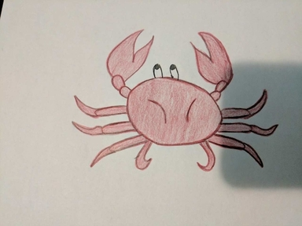

Lines 1-2: "I should have been a pair of ragged claws,
Scuttling across the floors of silent seas."
by Manasvi (original)
Although it seems random, in this modernist poem, one can deepen their understanding of the connection of this poem by looking at the crab as a symbol for this stanza.
Image left: Manasvi's drawing of a crab.
According to one such website, the crab can represent disillusionment, a characteristic of the modern hero. According to this site, the crab reminds one that not all paths lead directly to personal goals and that there should be a shift in focus from the inner self to the community all around you. Throughout the poem, the theme of loneliness and alienation is persistent, however, in these lines, Prufrock seems to be attempting to break free from the loneliness and try to belong, but without much success. The crab represents the path of Prufrock as he is focused on his inner self and consciousness, although he does try to shift into what is around him, he is insecure and decides against it.